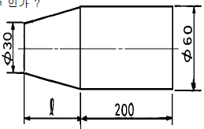
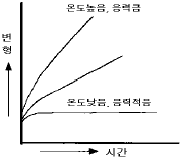
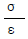
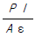
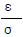
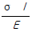

생산자동화기능사 (2004-07-18 기출문제)
1과목: 기계가공법 및 안전관리(대략구분)
1. KS규격의 안전색채에서 녹색의 표시사항이 아닌 것은?
- 안전
- 위생
- 주의
- 피난
(정답률: 62%)

2. 보링 작업에서 사용되는 절삭공구 중 가장 많이 사용되는 것은?
- 엔드밀
- 드릴
- 바이트
- 호브
(정답률: 45%)
3. 지그(jig)를 구성하는 부품이 아닌 것은?
- 고정구(fixture)
- 부시(bush)
- 몸체(body)
- 바이트(bite)
(정답률: 61%)
4. 슬로터(Slotter)의 구성 요소가 아닌 것은?
- 호브
- 회전 테이블
- 램
- 테이블 안내면
(정답률: 41%)
5. 오일 컵(oil cup)으로부터 작은 구멍, 밸브 등으로 거의 일정량씩 급유하는 방법은?
- 적하급유법(drop oiling)
- 패드급유법(pad oiling)
- 튀김급유법(splash oiling)
- 원심급유법(centrifugal oiling)
(정답률: 68%)
6. 다음 그림과 같이 선반에서 공작물을 테이퍼로 절삭가공할 때, 심압대의 편위 거리를 30㎜로 하면 테이퍼부의 길이 ℓ 은 몇 ㎜ 인가?

- 66.7
- 180.2
- 200
- 220
(정답률: 62%)
7. 니이형 밀링머신의 종류에 해당되지 않는 것은?
- 플레인 밀링 머신
- 만능 밀링 머신
- 수직 밀링 머신
- 편위 밀링 머신
(정답률: 53%)
8. 방전 가공에 대한 특징 설명 중 틀린 것은?
- 전기 도체이면 쉽게 가공할 수 있다.
- 다듬질면은 전혀 방향성이 없다.
- 공구는 구리나 흑연 등의 연한 재료를 이용한다.
- 전극 전체에 걸리는 힘이 기계가공보다 아주 커서 얇은 판이나 가는 선의 가공이 어렵다.
(정답률: 46%)
9. 나사 측정에서 삼침(선)법 이란 궁극적으로 나사의 무엇을 측정하는 방법인가?
- 유효지름
- 바깥지름
- 골지름
- 피치
(정답률: 57%)
10. 연삭 숫돌 입자가 알루미나(Al2O3)인 경우 입자의 순도가 가장 높은 것은?
- 1A
- 4A
- 1C
- 4C
(정답률: 57%)
2과목: 기계제도(대략구분)
11. 상온에서 강자성체이나 360℃이상에서는 자성을 잃으며 구리와는 균일한 고용체를 만드는 금속은?
- 니켈(Ni)
- 주석(Sn)
- 아연(Zn)
- 알루미늄(Al)
(정답률: 56%)
12. 다음 열처리 방법 중 표면 경화법에 속하는 것은?
- 항온 처리
- 침탄법
- 담금질
- 불림
(정답률: 45%)
13. 고속도강의 KS 재질 기호는?
- SPS
- STD
- SKH
- STS
(정답률: 44%)
14. 강을 담금질하기 위하여 고온으로 가열하는 가장 큰 이유는?
- 강의 조직을 페라이트로 바꾸어주기 위함
- 금속간 화합물을 분해하고 각종 원소를 균일하게 분포시키기 위함
- 결정입자를 크게 하기 위함
- 강의 경도를 높이기 위함
(정답률: 53%)
15. 고강도 Al합금은 내식성은 작으나 인장강도는 크다. 내식성을 개선하기 위하여 고강도 Al합금 표면에 내식성 Al합금을 접착시킨 것을 무엇이라 하는가?
- 알민
- 알팩스
- 알드리
- 알크래드
(정답률: 42%)
16. 막대의 양끝에 나사를 깎은 머리없는 볼트로서 한쪽 끝을 본체에 튼튼하게 박고, 다른 끝에는 너트를 끼어서 조일 수 있도록 한 볼트는?
- 기초 볼트
- 탭 볼트
- 스터드 볼트
- T 볼트
(정답률: 70%)
17. 회전수 4000rpm일때 20kW를 전달하는 둥근축의 비틀림 모멘트는 얼마인가?
- 487kgf.㎝
- 358.1kgf.㎝
- 3581kgf.㎝
- 4870kgf.㎝
(정답률: 34%)
18. 전동축에 휨을 주어서 축의 방향을 자유롭게 변경할 수 있는 축은?
- 크랭크 축
- 플렉시블 축
- 차 축
- 직선 축
(정답률: 66%)
19. 너트(nut)의 풀림 방지용으로 주로 사용되는 핀은?
- 분할 핀
- 코터 핀
- 스프링 핀
- 테이퍼 핀
(정답률: 54%)
20. 탄소강은 200∼300℃에서 상온보다 오히려 메지게 되는데 이러한 현상을 무엇이라 하는가?
- 취성 파괴
- 적열 메짐
- 청열 메짐
- 피로 파괴
(정답률: 44%)
21. 다음 중 정련동(electrolytic tough pitch copper)의 특성을 설명 한 것은?
- 산소의 함유량이 적다.
- 전기 및 열전도도가 좋다.
- 강도 및 경도가 좋아진다.
- 수소 여림이 생기기 쉽다.
(정답률: 63%)
22. 일반적으로 고온에서 볼수 있는 것으로 금속이 일정한 하중 밑에서 시간이 걸림에 따라 그 변형이 증가되는 현상은?

- 피로(fatigue)
- 크리프(creep)
- 허용응력(allowable stress)
- 안전율(safety factor)
(정답률: 66%)
23. 재료의 비례한도 내에서 길이 l , 단면적 A인 재료에 축방향 하중 P를 가했을 때 변형량을 나타내는 공식은? (단, σ :수직응력 E:세로탄성률 ε :변형률)




(정답률: 42%)
24. 다음 중 잘못된 것은?
- 인장 · 압축 선형스프링에서 탄성한도 내에서는 스프링의 변형은 하중에 비례한다.
- 스프링지수는 코일의 평균 반지름(R)과 재료의 지름(d)의 비이다.
- 스프링에 하중이 작용하지 않고 있을 때의 높이를 자유 높이라고 한다.
- 코일 스프링에서 유효감김 수란 스프링의 기능을 가진 부분의 감김 수를 말한다.
(정답률: 51%)
25. 베어링의 재료가 구비해야 할 조건이 아닌 것은?
- 녹아 붙지 않을 것
- 길들임이 좋을 것
- 부식에 약할 것
- 피로 강도가 클 것
(정답률: 81%)
26. 머시닝센터에서 공구 인선 반지름 오른쪽 보정에 사용하는 G기능은?
- G40
- G41
- G42
- G43
(정답률: 50%)
27. 다음 CNC선반 프로그램 중 G97 S120 M03;에서 S120이 의미하는 것은?
- 120m/min으로 원주속도 일정제어
- 120rpm으로 회전수 일정제어
- 120mm/min으로 공구이송 일정제어
- 120mm/rev로 공구이송 일정제어
(정답률: 58%)
28. 컴퓨터에 사용되는 RS-232C는 어떤 장치인가?
- 데이터 전송속도 측정장치
- 디지털신호를 아날로그신호로 변화시키는 장치
- 아날로그신호를 디지털신호로 변화시키는 장치
- 입, 출력 데이터를 전송하는 장치
(정답률: 55%)
29. 휴지(G04)는 지정된 시간동안 공구의 이송을 잠시 중지시키는 지령으로 사용되는데 사용할 수 없는 어드레스는?
- S
- X
- P
- U
(정답률: 45%)
30. 이동중에 가공을 하지 않기 때문에 PTP 제어라고도 하며 드릴링 작업이나 스폿 용접에 사용되는 제어방식은?
- 위치결정 제어
- 직선절삭 제어
- 윤곽 제어
- 형상결정 제어
(정답률: 68%)
3과목: 메카트로닉스 일반(대략구분)
31. 물체의 경계를 선, 원호, 원 등을 이용하여 3차원 물체를 표현하는 와이어프레임 모델링 기법의 특징이 아닌 것은?
- 데이터 구성이 복잡하다.
- 모델 작성을 쉽게 할 수 있다.
- 단면도 작성이나 물리적 특성 계산이 불가능하다.
- 처리 속도가 빠르다.
(정답률: 38%)
32. 다음 중 CNC공작기계의 구성요소가 아닌 것은?
- CAD시스템
- 서보 모터
- 데이터의 입.출력 장치
- CNC장치
(정답률: 49%)
33. NC공작기계의 발전과정의 분류 중 맞는 것은?
- NC-DNC-CNC-FMS
- NC-CNC-DNC-FMS
- NC-CNC-FMS-DNC
- NC-DNC-FMS-CNC
(정답률: 77%)
34. 머시닝센터의 프로그램중 보조프로그램에서 주프로그램으로 되돌아가도록 지령하는 보조기능 코드는?
- M99
- M98
- M02
- M00
(정답률: 39%)
35. 중앙처리장치(CPU)를 크게 두 부분으로 분류하면?
- 연산장치와 산술 장치
- 연산장치와 제어 장치
- 하드웨어와 소프트웨어
- 제어장치와 기억 장치
(정답률: 58%)
36. 어떤 한정된 각도사이를 회전운동 하는 것으로 로봇의 선회, 교반 장치, 자동문의 개폐, 밸브의 개폐용으로 사용되는 기기는?
- 공압모터
- 요동형액츄에이터
- 공압실린더
- 완충기
(정답률: 53%)
37. 공기압회로를 구성할 때 2개소 이상의 방향으로 부터의 흐름을 1개소로 합칠 필요가 있을 때 사용되며 입구가 2개소, 출구가 1개소로 되어있는 OR 밸브는?
- 2압밸브
- 체크밸브
- 셔틀 밸브
- 솔레노이드 밸브
(정답률: 44%)
38. 공압의 특성에 대한 설명이 잘못된 것은?
- 무단변속이 가능하다.
- 작업속도가 빠르다.
- 배관이 간단하다.
- 힘의 전달이 어렵고, 힘의 증폭이 불가능하다.
(정답률: 73%)
39. 단단 베인 펌프 2개를 1개의 본체내에 직렬로 연결시킨 것으로 고압으로 대출력이 요구되는 곳에 사용되는 베인 펌프는?
- 2단베인펌프
- 2연베인펌프
- 2단복합펌프
- 단단펌프
(정답률: 67%)
40. 유압관로 유량이 20 ℓ/min 일 때 내경 80 mm의 실린더에서 피스톤 속도(cm/min)는 약 얼마인가?
- 398.1
- 6.63
- 39.8
- 66.3
(정답률: 30%)
41. 다음은 압력을 표시한 단위이다. SI(International System of Unit)단위 계에서 압력의 기본 단위로 맞는 것은?
- ㎩
- bar
- kgf/cm2
- ㎰i
(정답률: 52%)
42. 유압기계 장치에서 유압을 제어하는 밸브의 3종류로 맞지 않는 것은?
- 압력제어 밸브
- 감압제어 밸브
- 유량제어 밸브
- 방향제어 밸브
(정답률: 43%)
43. 유압시스템에서 사용하는 유량제어밸브에 해당 되지 않는 것은?
- 교축 밸브
- 압력 보상형 유량조절 밸브
- 압력온도 보상형 유량조절 밸브
- 릴리프 밸브
(정답률: 35%)
44. 공기 필터, 압축공기 조정기, 윤활기, 압력계가 한 조로 이루어진 것으로 기기 작동 시 선단부에 설치하여 기기의 윤활과 이물질 및 드레인을 제거를 하는 것은?
- 공기 압축기
- 애프터 쿨러
- 공기 여과기
- 공기 조정 유닛
(정답률: 40%)
45. 다음중 공압기기에서 수분을 제거하기 위한 장치가 아닌 것은?
- 에어 드라이어(Air Dryer)
- 냉각기
- 어큐뮬레이터
- 공기압필터
(정답률: 65%)
46. 자동화시스템의 구성요소에서 서보모터(Servo Motor)는 주로 어디에 속하는가?
- 메카니즘(Mechanism)
- 액츄에이터(Actuator)
- 파워서플라이(Power Supply)
- 센서(Sensor)
(정답률: 79%)
47. 되먹임 제어의 효과가 아닌 것은?
- 제어계의 정확도, 감도를 개선할 수 있다.
- 시스템이 간단하고 설치비가 저렴하다.
- 외부조건의 변화에 대한 영향을 줄일 수 있다.
- 제어기 부품의 성능이 저하 되어도 큰 영향을 받지 않는다.
(정답률: 49%)
48. 도형기반언어로 현재 널리 사용되는 PLC언어는?
- 니모닉방식
- 래더도방식
- 플로챠트방식
- 타임챠트방식
(정답률: 72%)
49. 공장자동화에 손쉽게 많이 사용되는 액츄에이터는?
- PLC
- 근접센서
- 리밋스위치
- 공압실린더
(정답률: 57%)
50. PLC의 입출력장치에 필요한 사항과 거리가 먼 것은?
- 외부기기와 전기적 사양이 일치할 것
- 외부기기와 인터페이스가 용이할 것
- 외부기기로부터 잡음을 잘 받아들일 것
- PLC 동작 중에는 입출력상태를 감지할 수 있을 것
(정답률: 81%)
51. PLC의 주요 주변기기 중 프로그램로더가 하는 역할과 거리가 먼 것은?
- 프로그램 기입
- 프로그램 이동
- 프로그램 삭제
- 프로그램 인쇄
(정답률: 77%)
52. 공장자동화의 적용분야가 아닌 것은?
- 제조생산업무
- 물류시스템
- 자동운반
- 개발설계업무
(정답률: 85%)
53. 자동화시스템에서 수치제어공작기계, 로봇 또는 자동일감 교환장치 등을 조합하여 장시간 동안 무인운전을 할 수 있도록 된 기본생산 공정을 무엇이라 하는가?
- 간이자동화시스템(LCA)
- 유연생산셀(FMC)
- 유연생산시스템(FMS)
- 컴퓨터통합생산시스템(CIMS)
(정답률: 27%)
54. 다음 센서 중 접촉식 센서에 속하는 것은?
- 초음파센서
- 마이크로스위치
- 적외선센서
- 근접스위치
(정답률: 61%)
55. 위치결정 방식에 의한 로봇의 종류 중 관계없는 것은?
- 다관절형 로봇
- 직각좌표형 로봇
- 원통좌표형 로봇
- 무한좌표형 로봇
(정답률: 43%)
56. 10진수 56을 BCD코드로 나타내면?
- 1101 1001
- 0101 0110
- 1100 1100
- 1010 1101
(정답률: 63%)
57. 릴레이의 기능을 설명한 것 중 틀린 것은?
- 증폭 기능
- 교환 기능
- 연산 기능
- 10진 정보의 저장기능
(정답률: 52%)
58. 센서의 선정시 고려해야 할 사항중 거리가 가장 먼 것은?
- 정확성
- 감지거리
- 작업자의 기술수준
- 신뢰성
(정답률: 86%)
59. 다음중 PLC프로그램의 작성 방식중 거리가 가장 먼 것은?
- 래더도
- 플로차트
- 타임차트
- 객체지향방식
(정답률: 77%)
60. 아날로그신호를 디지털신호로 변환하는 기기는?
- 센서
- PWM 변환기
- D/A 변환기
- A/D 변환기
(정답률: 77%)
KS규격의 안전색채는 안전에 관련된 정보를 전달하기 위해 사용되는 색상입니다. "안전", "위생", "피난"은 모두 안전에 관련된 정보를 전달하는 것이므로 안전색채에서 표시될 수 있습니다. 하지만 "주의"는 경고나 주의를 전달하는 것이므로 안전색채에서는 표시되지 않습니다.